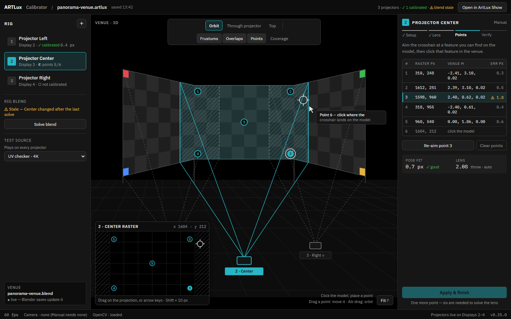
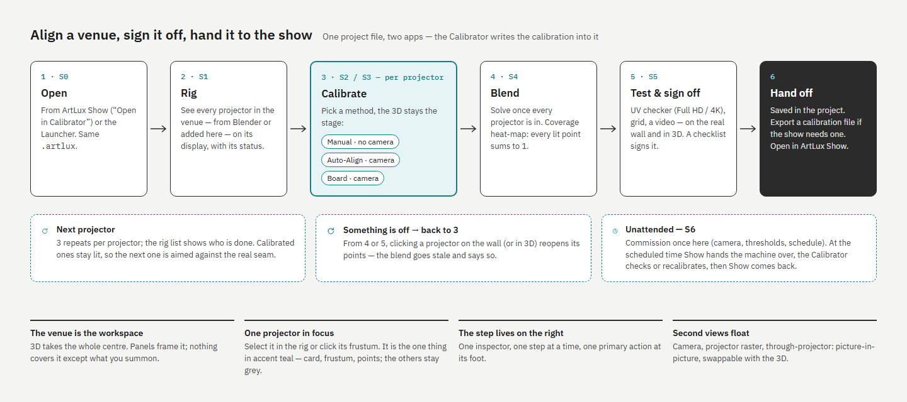
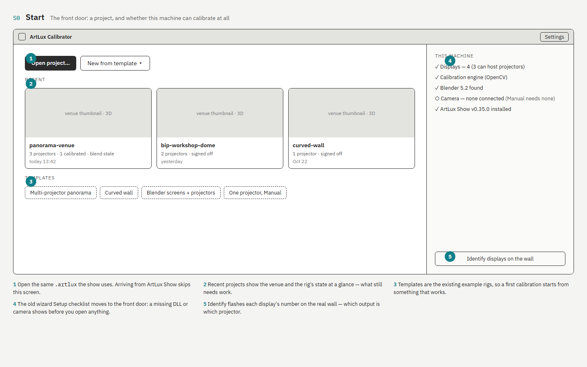
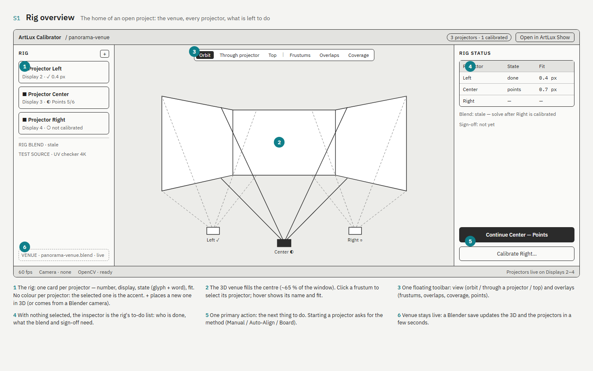
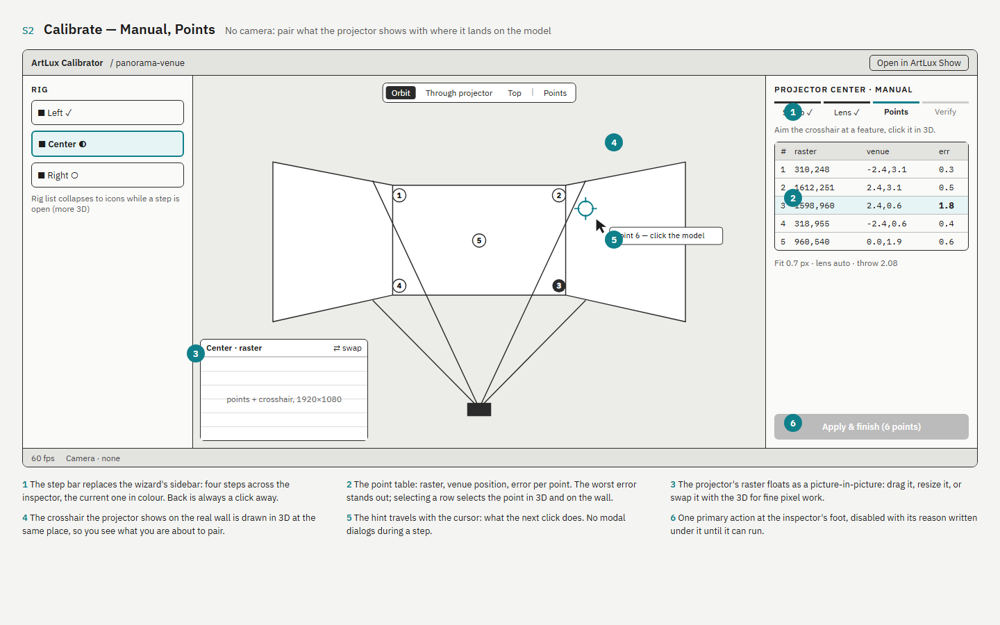
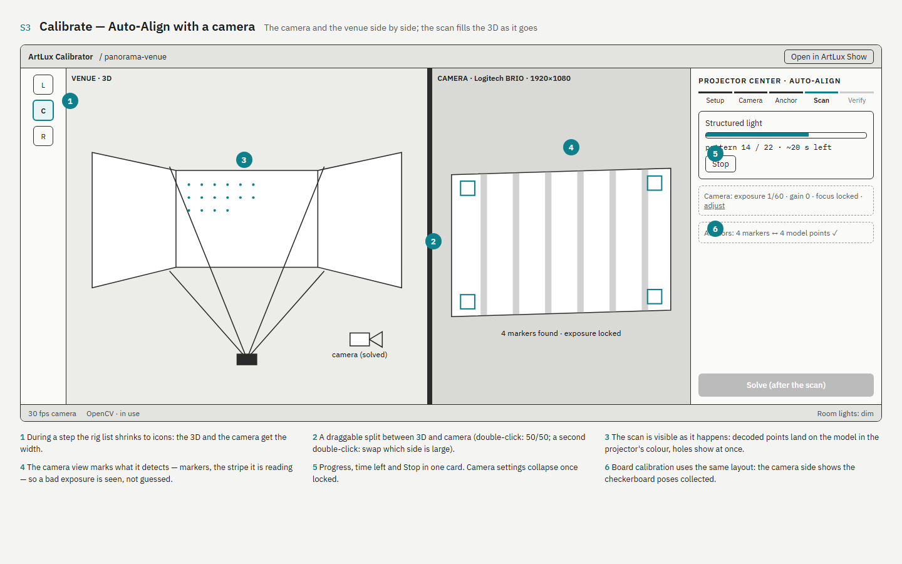
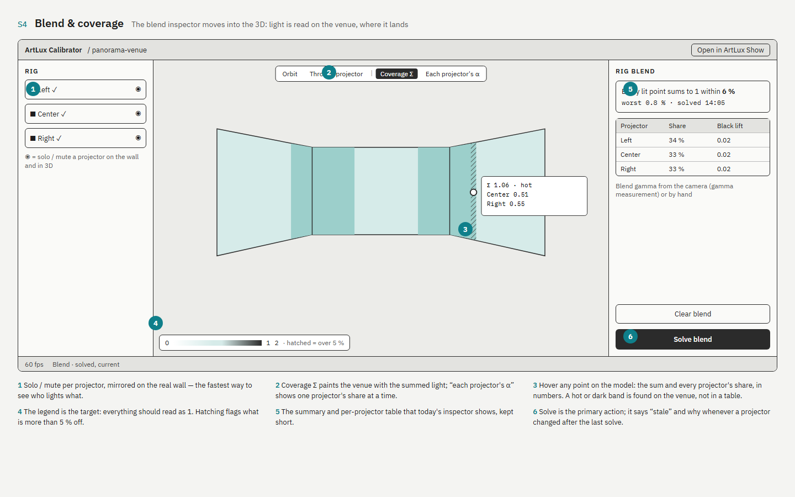
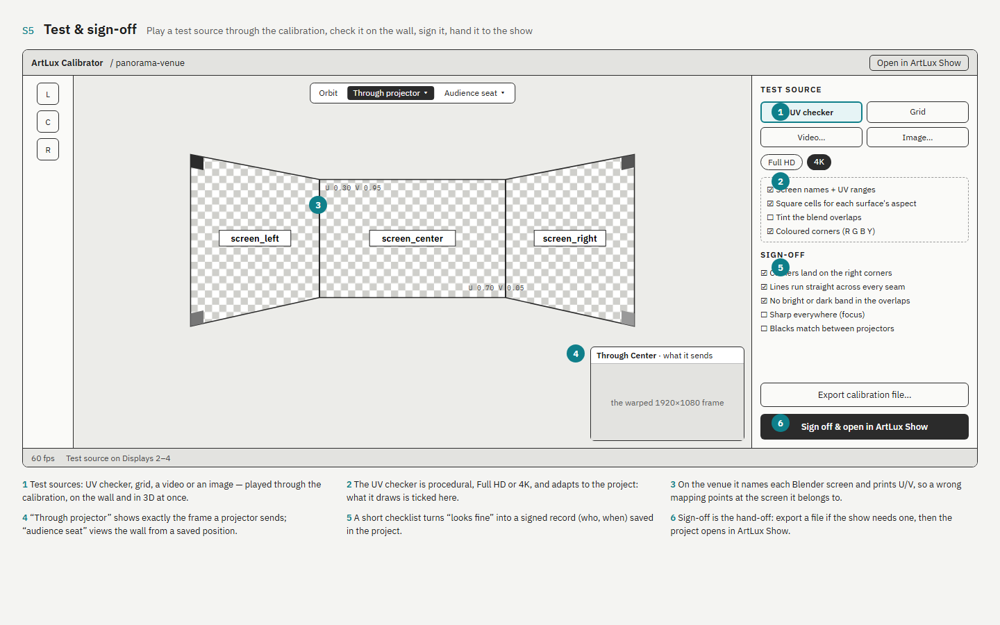
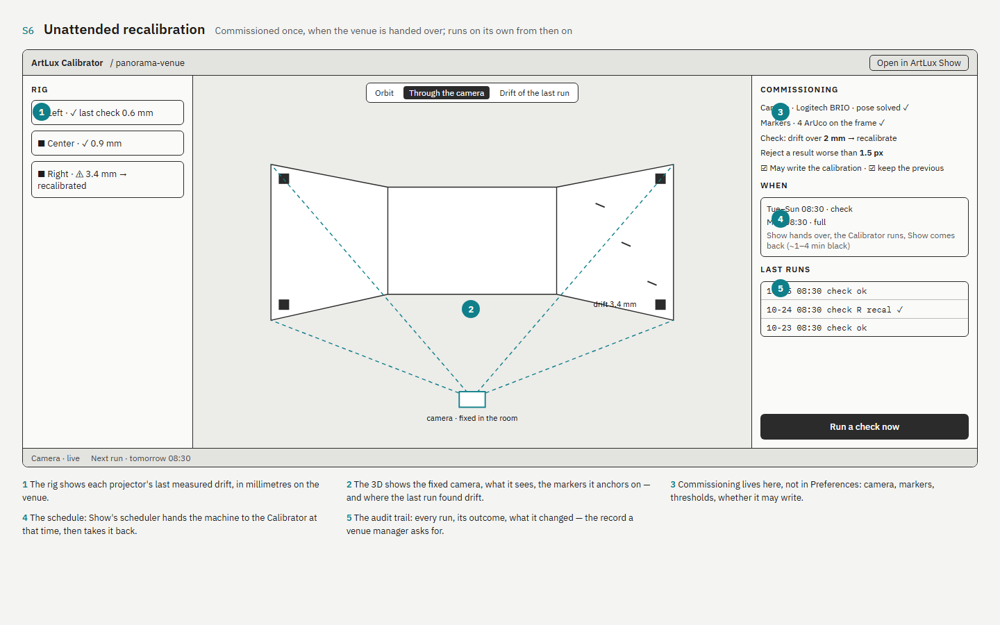

ArtLux Calibrator — UI proposal
Saved from the design canvas on 2026-10-25 — a still of each screen. The editable sources stay on the canvas.
New look — Manual calibration, Points step

The operator's flow

S0 · Start

S1 · Rig overview

S2 · Calibrate — Manual, Points

S3 · Calibrate — Auto-Align with a camera

S4 · Blend & coverage

S5 · Test & sign-off

S6 · Unattended recalibration
